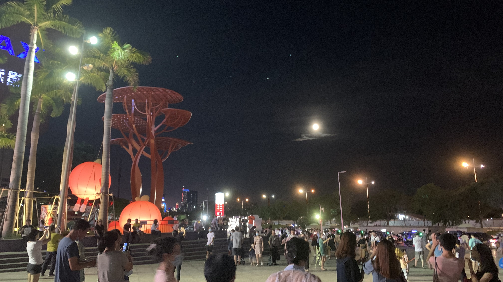
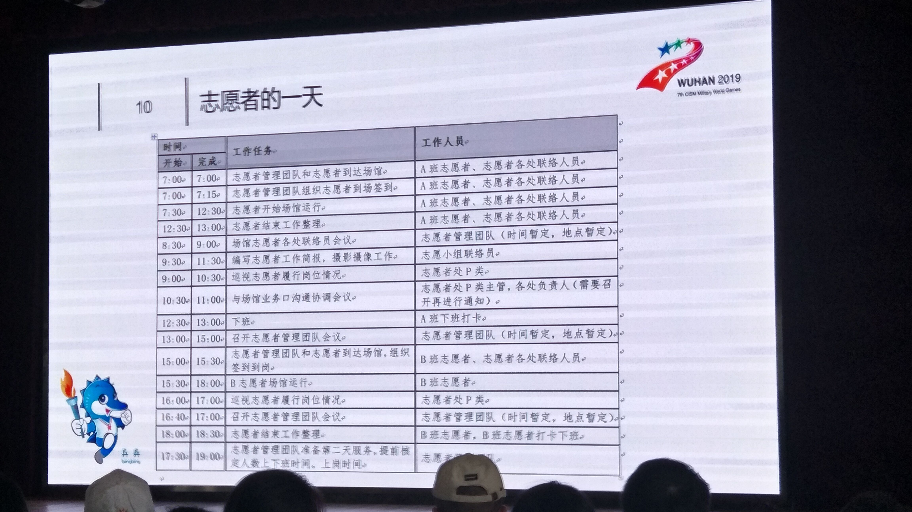
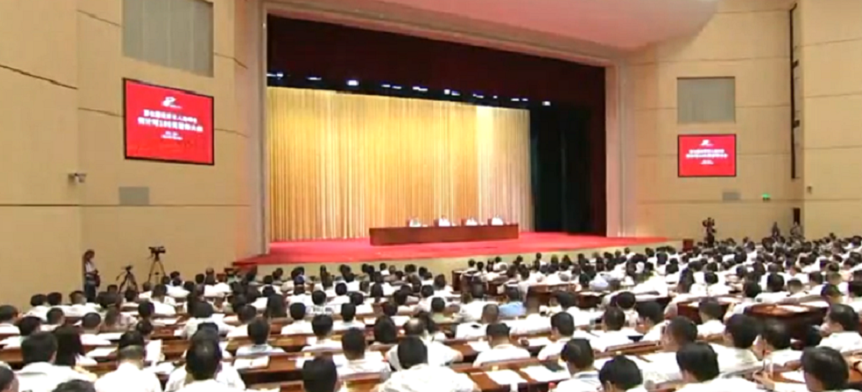

主要就是一些在校期间的碎片经历，想更多了解我的业余可以看一看啦
2021年实训结束，我来到了深圳
在实训的时间里我就想好了，我想到深圳，也不是突然来的想法，是姐姐也在这边，武汉这座城市我也很喜欢，东湖的风景，还有很多美食。但还是想到不一样的地方去试一试，我可以做到的上限在哪里。初到深圳，不断进行中.....
图片是随手拍的，月亮很美
2021年暑假学校安排到武汉进行实训，时间：一个月，内容：Java
这一个月的时间里，时间很紧凑，实训老师跟我们讲了很多学校老师没有给我们讲过的内容，不管是学习的知识点和传授的经验，都是想让我们更快的适应社会，每个人有开始要安排自己以后的发展方向了。在实训的最后一个多星期，武汉又有零星的疫情，大家紧张的心弦又被挑起了，最后提前三天结束我们的实训，老师安排我们回家。
2020年疫情大爆发
新冠疫情: 这段时间一直呆在家里，那也不能去，终于有很多时间，但是不能出门的日子就有莫名的压抑感，天天看新闻报道疫情，武汉的疫情爆发，全国的疫情，全球的疫情，真正的恐惧是每天增加的新冠患者数量和死亡数量，每天起床的第一件事情都是看前一天新增病例。
2019年寒假在武汉实习 职位：前端开发
是从这个时候真正去到一家公司去了解一个项目的完整流程，参与到项目中，我的上司是个话不多，但人很好的人。他后来跟我说，他当时面试我的时候，就感觉我和他眼中的女程序员的样子一样，我也不知道他眼中女程序员到底是什么样子，就这样开始给我参与项目，想想当时技术真的很菜，虽然现在也很菜，我感觉我一直在给我的同事挖坑，代码格式也不规范，还好遇到问题他们会指点我。
新冠疫情: 元旦快放假的时候，我的同事就提醒我说，武汉出现了流行病例，让我不要去人多的地方，但是我当时还是贪玩，和朋友跑到了光谷观察去跨年，当时一起的朋友还给了我一个口罩，让我带着预防一下，我默默的带上了口罩，但是想着我身体好，不怕流感病毒，现在想想真的有点后怕。后来每天看新闻，看流感人数，就基本没有出门玩过了，出门也有戴口罩，当时没有出现新冠这个概念，实习也快结束了。到快过年的时候，武汉封城，才明白事情的严重性，还好平平安安的回到咸宁。希望每个人都健健康康的迎接新的一年呀。
2019年第七届世界军人运动会赛会志愿者
 感动瞬间：整个比赛虽然就十几天的时间，但在比赛之前有很多人为这次的比赛去做很多的准备，在看到这场比赛要在武汉举行的时候，就马上报名了，还拉着朋友一起参加这场志愿活动。真正参与进来之后，只要看到相关的新闻都会敏感一些，可以感受到世界对这场赛会的关注，还有习大大的发言，最直接的感受就是武汉这座城市好多地方都在为比赛做着规划，包括军运村，赛会场馆，道路的修建等等，小水杉们一起为这场比赛能够有更好的服务做了很多培训，很多细节都是在不断预演中得以完善，我很荣幸参与其中，看到大家一起努力，现在想起来还是荣誉感和幸福感满满的。
2018年暑假在湖北宜昌的一家教育培训机构担任老师
上课小场景：“现在拿出纸笔，把书合上，我们要开始听写了。”好像每一个学生在这一刻的表情就出卖了他们到底记得多少，才发现之前英语课，老师为什么总是要抽查我的听写本，也理解了老师罚抄的目的真的不是抄写，是希望我们都能真正的去记下来。
这是我第一次担任老师，在我第一次站在讲台上授课的时候；在听到学生喊我：夏老师，夏老师的时候；在和学生的家长进行沟通的时候......好多个这样的瞬间让我感觉我的责任，从一个被老师指导，一个一直被照顾的角色转化到去教导别人，我之前一直不喜欢老师这个职业，但是真正接触之后，觉得每个学生都有他们自己的想法，这些想法可能会让他们有一些不一样的行为，但是当你真的去了解他们的想法之后，又会发现这些想法的合理性 。现在想想这些场景还是很开心。这次经历让我感觉去教会别人的时候同时我也在学习，换个角色的学习。也更能理解体会他人的感受。
他们真的都可可爱爱，我搜集发现我居然没有拍图片。